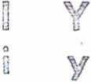
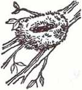
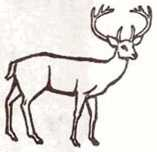
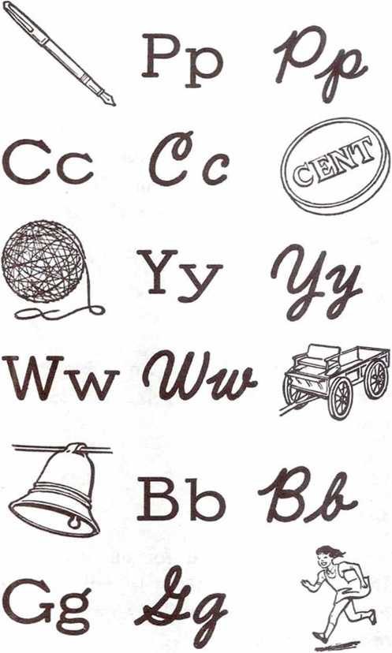
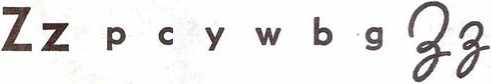

LEARN TO R E A D AND WRITE
LEARN TO READ AND WRITE
Produced by
WATCH TOWER BIBLE & TRACT SOCIETY OF PENNSYLVANIA
1967
Method of teaching........................... page 61
Printed by Watchtower Bible and Tract Society of New York, Inc.
International Bible Students Association Brooklyn, N.Y., U.S.A.
Made In the United States of America
INK
O U
@ U
All Scripture is inspired of God and beneficial for teaching, for reproving, for setting things straight, for disciplining in righteousness, that the man of God may be fully competent, completely equipped for every good work. —2 Timothy 3:16,17.
Nn man
^4
M
Rr
Dd
Aa at add an and
Ee end enter
Oo or order on odd
Uu under undone I i in is it Yy daddy sunny 6
sa sat sand
se sense send
si sin sit
so sorry Sodom
su sun sunset satin sister san'i-ty soon seen sissy stars ass es-tate' sat sit sin sun
m m ai
Sinners soon sorry.
Sunset soon seen.
7
na nas'ty narrate
ne nets nest
ni nit ninnny
no not nonsense
nu nut nutty
on Nat net nat'ty
in Nun not ninnny
sin nod nut nutty
Ann enters a nursery. Ann entertains Anna.
|
Tt |
s n t r |
d |
|
ta |
tan |
tatter |
|
te |
ten |
test |
|
ti |
tin |
tint |
|
to |
tot |
torrent |
|
tu |
turn |
turret |
|
tent |
tense |
ter'ror |
|
tend |
ten der ten'ant | |
|
a-tone' at-tain' |
at-tend' | |
|
at |
it Ted |
Tad |
|
tan |
ten tin |
turn |
|
Ted |
■■ m a turns to |
sit. |
Tad tends nets.
9
|
Rr s |
n t r |
d |
|
ra |
ran |
rat |
|
re |
rest |
rent |
|
ri |
rid |
rinse |
|
ro |
rot |
rot'ten |
|
ru |
run |
rut |
|
rod |
■ ■ M runt |
rye |
|
red |
re-turn' |
runner |
|
rust'y |
errand |
ren'der |
|
er'ror |
ter'ror |
ar-rest' |
|
nor |
door |
snore |
|
rid |
rod |
red |
|
■i M M Rats eat nuts. Do not run in |
a rut. | |
|
Run on the road. | ||
|
Dd s |
n t r |
d M |
|
da |
Dan |
dander |
|
de |
den |
dent |
|
di |
did |
din |
|
do |
dot |
dot'ted |
|
du |
dust |
dust'er |
|
dan'dy |
did |
dinner |
|
dense |
deed |
dentist |
|
dis tant desti- |
any Don | |
|
dad |
sad |
mad |
|
end |
and |
under |
Dan desires dinner.
Is Don a dentist?
11
s n t r d a e i o u a an at and art e end enter editor i it in into inside o on onto onset u under unrest undo
■ a a
ea eat east read ee seen need seed oo soon noon toot
a a a
s sat sun soon n nut not nest t tan ten tint r ran rat rod d did den dust
a a a
rest sit sister
sorry run estate
12
SUN AND STARS
Ann and Dan sat in the sand sorry to see the sun set. Soon they saw stars. Then it was time for dinner. They did not stay any longer. They see the sun in the day and the stars at night. Where are the stars during the day?
|
the |
then |
they |
|
was |
saw |
where |
|
time |
for |
longer |
|
night |
during |
s n t r d a e i o u
Wb LI ££
Ff /
Atth Wl
Xx Yy
Kk
Mm
|
LI |
1 f h k s n t r |
d |
|
la |
lad |
land |
|
Ie |
let |
let'ter |
|
li |
lid |
linen |
|
Io |
lord |
lot |
|
lu |
lull |
lust |
|
land'lord |
less |
Lem'u-el |
|
les'son |
lift |
last |
|
lest |
loss |
list |
|
left |
led |
felt |
|
fell |
tell |
sell |
|
little |
Is'ra-el |
Daniel |
Lot left his home in Sodom. He lost his home, not his life. 15
|
Ff । s |
f h k n t r | |
|
fa |
fat |
fan |
|
fe |
fell |
fet'ter |
|
fi |
fit |
fire |
|
fo |
for |
for' est |
|
fu |
fun |
fuss |
|
fam'ine |
fame |
firm | |
|
from |
fish |
fill |
fat'ling |
|
fat'ty |
fun'ny |
effort | |
|
after |
if |
fun'nel | |
|
Fes'tus |
fifty |
fond | |
|
fat |
fit |
fan |
fun |
From house to house and door to door let us talk the truth.
|
Hh |
I f s n |
h k m t r d | |
|
ha |
had |
I hand |
hat |
|
he |
hen |
i held |
helm |
|
hi |
hid |
hill |
hit |
|
ho |
hot |
hor' ror | |
|
hu |
hut |
hunt |
hum |
|
him |
■I ■■ hell hun'dred | ||
|
ham |
handy |
hint | |
|
his'to- |
ry |
hor'rid |
hum'ble |
|
ho'ly |
■■ |
home |
hay |
|
he'ro |
here |
hire | |
|
hate |
hu'mor |
hy-e' na | |
|
Leah |
No'ah |
Ho-se'a | |
|
Ruth |
Isaiah |
Esther | |
|
hit |
hot |
hut | |
How many men in history had names like Herod, Noah or Hosea?
|
Kk i s |
f h n t |
k r |
d |
|
ka ke ki |
kar'at katy-did kennel ket'tle kid king kin | ||
|
ker'o-sene kilo kill |
kindle kingdom | ||
|
Cc a |
e i |
o |
u Gc |
|
ca co |
can cock |
calcu-late col-lect | |
|
cu |
cut |
culture | |
|
camel com'et |
cam'er-cot'ton |
a cal'en-dar Ca'naan-ites | |
|
Kidron |
Ko'rah |
Co |
-rin'thi-ans |
Keep some corn cooking.
Can a man cancel the killing of a calf or a kid?
|
Mm |
I f h k s n t r |
d d |
|
ma |
man |
man'i-fest |
|
me |
met'al |
menu |
|
mi |
milk |
min'is-try |
|
mo |
mod'el |
mor'al |
|
mu |
must |
mutton |
man'tie market mar'ry
meat melt mid'die
miss modern myth
mys'tery Moses Mes-si'ah
Mark Mar'tha Mary
mass mess miss moss
The name of the first man is Adam. He fathered all mankind.
The Messiah died on a stake to redeem the meek ones. Our faith in him leads to life.
sntrdlfhkm
ai faith rain entertain ay say lay may ie died lied fried
ou our house out
Ro'mans Ne-he-mi'ah
Deu-ter-on'o-my Na'hum
Lam-en-ta'tions A'mos Sam'u-el Tim'o-thy
■
sat nut try ran
did and end into
onto under aid eat
seen soon say fried
our let fire hat
hate king can man
M M M
sa na ta ra da la fa ha ka ma
When you see the sunrise you should remember God. He lets the sun shine on all kinds of people. The sun shows God’s goodness to all people. The sun helps the plants to grow so we can eat. Because of God’s goodness to us we should honor him.
God hates idols. An image or idol cannot see or talk. An idol is not God.
God rules as king for all the earth. The kingdom of God is not earthly but will cause much happiness to men on earth.
|
Pp |
P c sntrd |
y w b g Ifhkm * | |
|
pa |
pan |
pants |
pad |
|
pe |
pen |
pet |
pep'per |
|
pi |
pin |
pill |
pit |
|
po |
pod |
pot |
pol'ish |
|
pu |
pulp |
pump |
pun'ish |
|
■■ public |
a « pad'die |
part | |
|
pet' rol |
pep |
pick | |
|
pil'lar |
pop'u-lar |
Paul | |
|
Peter |
pie |
Pi'late | |
|
peace |
pain |
up'per | |
|
pan |
pen pin |
pun | |
Peter and Paul had a deep respect for the truth. They studied often about paradise.
Cc p c y w b g Qc ce cell cen'ter
ci cit'y cin'der
cy cyst cyl' in-der
cent cer'e-mo-ny
cis'tern cen'sor cen'tu-ry
|
Yy |
1 f h |
k m | |
|
ya |
yam |
yard |
yak |
|
ye |
yell |
yes |
yet |
|
yo |
you your |
yonder | |
|
yaws |
yelp |
yel'low | |
|
youth |
young your-self | ||
|
cell |
yell |
well |
bell |
A city may be full of cement and cinders, yet the parks are pretty.
24
p c y w b g gsntrd Ifhkm
wa wag wag'on wait
we wet wed'ding west
wi win will wilt
wo word work world
■i ■■ M
water warm wall
web wel'come went
wind willful win'ter
worth wor'ship law
M ■ M
we way win wet
yet get pet bet
M ■ ■
We went for a walk by the water and talked about right worship and God’s laws. We must worship God in spirit and in truth in harmony with his Word.
Bb p c y w b g sntrd Ifhkm
|
ba |
bad |
back |
bam-boo |
|
be |
bed |
bend |
best |
|
bi |
big |
bid |
bit'ter |
|
bo |
bod'y |
bond |
bottle |
|
bu |
bud |
bulk |
bub'ble |
bell bug ban band bel'ly belt bot'tom buck bap tism Bi'ble bat'tie beast
bag book ba-nan'a bit buck'Ie Bab'y-lon balance
Studying the Bible leads to baptism and freedom from bondage to Babylon the Great.
|
Gg |
P c sntrd |
y w |
I f h k m f | |
|
ga |
gas |
gag |
gather | |
|
ge |
get |
gear |
Ge-henna | |
|
gi |
give |
gift |
gid'dy | |
|
go |
got |
God |
god'ly | |
|
gu |
gun |
gulf |
gum | |
|
get |
got |
gut |
gust | |
|
leg |
beg ■i |
peg |
keg | |
|
gap |
gam'ble |
gang | ||
|
gospel |
gild |
gos'sip | ||
|
Gog |
Ma'gog |
goat | ||
|
Gali- |
lee |
gill |
Ga-la'tians | |
Gog of Magog is the great enemy of God. Gog was not from Galilee or Galatia but from Magog.
p c y w b g
|
pan |
Peter |
public |
|
cell |
city |
cent |
|
yes |
you |
youth |
|
word |
worship |
work |
|
Bible |
book |
battle |
|
God |
gas |
give |
|
pain |
paid |
aid |
wait |
|
gear |
beast |
least |
east |
|
pie |
die |
goat |
boat |
|
you |
your |
deep freedom | |
|
pan |
pen |
pin |
pun |
|
cell |
yell |
well |
bell |
|
win |
won |
get |
got |
|
bad |
bed |
bid |
bud |
|
pad |
cad |
bad |
gad |
|
s n t r d |
I f h k m |
pcywbg | |
The Word is the spokesman of God. This is another title for Christ. He came to the earth and dedicated himself to doing God’s will. He set the lead for us in the ministry, teaching pubLlcly and from house to house. We should follow the same course to gain God’s blessing.
The Word became flesh and walked the earth as a man. This was God’s Son. He became the Messiah or anointed one. The prophecies that God had told Israel were fulfilled by him. Through faith in Christ we now share the hope of eternal Llfe in God’s new system of things. This is near at hand, since Christ has already been enthroned as King at God’s right hand.
Q/v-
Zz
|
Ji i v I f h k m |
z F |
x q >cywb< | |
|
ja jam |
jal |
D |
jazz |
|
je jet |
jelly |
Jesse | |
|
ji jilt |
jinx |
jingle | |
|
jo job |
joy |
jolly | |
|
ju jug |
just |
jump | |
|
ge gem |
gel'atin |
germ | |
|
gi giant |
ginger |
gin | |
|
■ Je-ho'vah |
Jesus |
Jah | |
|
jab |
junk |
germ | |
|
gypsy |
agent Joshua | ||
|
Judges |
Gen'e-sis |
Job | |
|
Joel |
Jonah |
John | |
|
Jer-e-mi'ah |
gen'tle | ||
Jam and jelly make John jolly.
Jesus’ name means Jehovah is
salvation.
Vv j V z x q C\fo
va val'id valley val'ue
ve vent vel'vet veg'e-ta-ble vi vic'to-ry vin'di-cate
vo vol-ca'no vol'un-tary
vu vul gar Vul'gate vul'ture verse ven'er-ate ver'y vessel di-vine servant
Jehovah’s victory at Armageddon will bring veneration to him.
za Zach-a-ri'ah Zac-chae'us ze Zeb'e-dee Zech-a-ri'ah zi zig'zag zip'per zo zoo zoom Zo'ar
zebra ze'ro Zed-e-ki'ah Laz'a-rus Zeph-a-ni'ah buzz vis'it vi'sor wise rose
eyes says gaze daze
\Ne can see a zebra in a zoo.
Zebedee and Zacchaeus Llved during Jesus’ time. They had zeal for righteousness. They knew the land from Zoar to Zion.
|
Xx |
J |
v z |
X |
q |
|
ax ex ix ox ux |
ax ex'it fix box flux |
ax'Ie ex'tra six fox crux |
ax'i-om ex'er-cise mix par'a-dox lux' u-ry | |
|
ex-am'ine Ex'o ex-hort' ex-cel |
-dus ex-cuse ex'cel-lent | |||
Exodus tells of the luxuries of Egypt and the exit of Israel. We do well to examine it.
What is similar about the words fox, box and ox?
* z x q Qa,
qua quake quart qual'i-ty que queen queer ques tion qui quick quiet quit
quo quo ta quote quo-ta'tion
Do you quaLlfy quickly?
Aa Bb Cc Dd Ee Ff
Gg Hh Ii Jj Kk Ii
Mm Nn Oo Pp Qq Rr Ss Tt Uu Vv Ww
Xx Yy Zz
da, 'EM- <3c 3,2,
&a- 'Wi dkc d/ ju&Tnmnn&o-'Pp, Q-tbEtfod-A
Jehovah is the King of the universe. He has placed his Son Jesus as King of his kingdom.
Under the rule of Jesus the earth will become a paradise. Those who love truth and righteousness will be privileged to Llve through Armageddon. They will see God’s purpose for the earth fulfilled. The whole earth will become Llke the garden of Eden. Now is the time for us to examine quickly our relationship to Jehovah so we will Llve to see these blessings.
Men and the animals will Llve at peace. There will be no more war. Sickness and death will also be gone. The faithful, zealous witnesses of old such as Joshua, Jephthah and Jonah will be resurrected to Llve in the restored paradise due to their having served Jehovah.
With the end of this system just around the corner we must quickly take our stand before it is too late. By examining the exodus account we have set before us the pattern of zealous action leading to Llfe in the new system under Christ.
|
Aa |
A' bel |
A' mos |
ape | |
|
ai |
aid |
aim |
pain |
Cain |
|
ay |
bay |
way |
say |
pay |
|
ea |
break |
steak |
great | |
|
ei |
rein |
vein |
veil | |
|
eigh |
eight |
weight |
neigh'bor | |
By faith Abel offered God a sacrifice of greater worth than Cain.
|
Ee |
Eve |
E' den |
Le'ah |
|
ea |
beast |
teach |
preach weak |
|
ee |
seed |
feed |
seem need |
|
ey ie |
key piece |
mon' key niece |
tur' key chief thief |
|
Adam |
i called |
his wife1 |
’s name Eve, |
because she had to become the mother of everyone Llving.
|
Ii |
I' saac |
i' dol |
i-de' a |
|
ie |
Lle |
pie |
die |
|
igh |
high |
sigh |
thigh |
|
ui |
guide |
guile |
be-guile' |
|
y |
by |
my |
cry try |
|
By |
faith Abraham as |
good as | |
|
offered up Isaac |
his only-begotten | ||
|
son. |
But he reckoned that |
God was | |
|
able |
to raise him |
from |
the dead. |
|
O O O' bed owe woe oa coat goat road oe hoe toe foe ow crow tow blow Woe for the earth and for the sea, because the Devil has come down to you, having great anger, knowing he has a short time. | |||
|
(Ji! U' rim u' nit ew new dew ue due hue Render to all their dues, who calls for the tax, the |
use few cue to him tax. | ||
|
au aw aught ought oi oy oo ood ew oo ue ui OU ow ea |
■■ cause paw caught brought oil boy foot good crew moon true bruise out now earn |
■1 • pause law taught thought boil joy book wood chew zoo clue cruise pout town earth |
be-cause' aw' ful naught fought coil toy cook stood blew barn-boo' blue bruis' er pound down learn |
a as in able, care, am, arm, ask, all
e as in eve, end, there, prey
i as in ice, ill
o as in old, orb, odd, other, do
|
u as in |
use, rude, full, |
up, urn | |
|
y as in |
fly, hymn | ||
|
ch |
change |
chair |
charge |
|
much |
touch |
church | |
|
char' ac-ter |
cha' os |
ache | |
|
sh |
shall |
should |
shoes |
|
she |
fish |
wash | |
|
th |
the then |
there | |
|
them they |
fifth |
that | |
|
wh |
why who |
what |
when |
|
where which |
while |
whose | |
|
There |
is no honor |
greater |
than |
that of serving Jehovah. Now is the time when we should make our choice for God’s kingdom, which will do away with all wickedness, while we still have the chance. 38
|
br |
brown |
brick |
brute |
|
cr |
creek |
crack |
crane |
|
dr |
drive |
drip |
dress |
|
fr |
from |
frame |
fright |
|
gr |
green |
grand |
grow |
|
P' |
prov' erb |
prac' tice |
prac' ti-cal |
|
tr |
trip |
trav' el |
treat |
|
bl |
black |
blue |
blade |
|
cl |
clean |
clear |
cliff |
|
fl |
flow' er |
flame |
flat |
|
gi |
glass |
glad |
globe |
|
pi |
place |
please |
play |
|
si |
sleep |
slap |
slay |
|
sc |
scrap |
scratch |
scat' ter |
|
sk |
sky |
skin |
ask |
|
sm |
smart |
small |
smell |
|
sn |
snap |
sneak |
snort |
|
sp |
space |
speech |
spark |
|
spr |
spread |
spring |
spray |
|
st |
strong |
steal |
street |
|
sw |
sweat |
swear |
sweep |
|
tw |
twelve |
twin |
twist |
|
b |
comb |
debt |
dumb |
|
e |
save |
home |
paradise |
|
g |
sign |
reign |
gnat |
|
gh |
night |
fight |
light |
|
h |
hour |
hon'est |
John |
|
kn |
know |
knee |
knife |
|
1 |
talk |
walk |
half |
|
n |
hymn |
column |
sol'emn |
|
ps |
Psalms |
psy-chol' |
ogy |
|
t |
apos' tie |
of'ten |
lis'ten |
|
wr |
wrong |
write |
wrote |
|
ph |
phone |
Ce'phas |
Phar'i-sees |
|
-ough |
e-nough' cough |
rough trough |
tough |
|
-dge |
wedge |
ledge |
edge |
|
-tch |
ditch |
witch |
hitch |
|
-ck |
check |
wreck |
neck |
|
-nk |
bank |
rank |
plank |
|
-nd |
band |
sand |
land |
|
Which letter |
in Psalms |
is silent? | |
|
What |
other letters are |
sometimes | |
silent? What does the “ph” in Pharisees sound like? the “ough” in cough? 40
|
-ed |
talked |
walked |
asked | |
|
-er |
her |
other |
moth' |
over |
|
-ir |
fir |
sir |
first |
bird |
|
-ur |
fur |
cur |
turn |
burn |
|
-ar |
far |
car |
bar |
tar |
|
-or |
for |
more |
shore |
core |
|
-ang |
rang |
sang |
bang |
clang |
|
-ing |
ring |
thing |
bring |
cling |
|
-ong |
strong |
long |
wrong |
thong |
|
-ung |
rung |
stung |
clung | |
|
-ous |
religious gracious cautious | |||
|
-ite |
bite |
kite |
trite | |
|
-ight |
light |
tight |
might | |
|
-ness |
bright' ness |
wick |
' ed-ness | |
|
-tion |
sal |
-va' tion |
con-di' tion | |
|
-sion |
per-mis' sion |
com- |
mis' sion | |
|
-tial |
in-flu-en' |
tial mar' |
tial |
par' tial |
With the heart one exercises faith for righteousness, but with the mouth one makes public declaration for salvation.
Books of the Hebrew Scriptures
Genesis Exodus Leviticus Numbers Deuteronomy Joshua Judges Ruth 1 Samuel 2 Samuel 1 Kings 2 Kings 1 Chronicles 2 Chronicles Ezra Nehemiah Esther Job Psalms Proverbs Ecclesiastes The Song of Solomon Isaiah Jeremiah Lamentations Ezekiel Daniel Hosea Joel Amos Obadiah Jonah Micah Nahum Habakkuk Zephaniah Haggai Zechariah Malachi
Books of the Christian Greek Scriptures
Matthew Mark Luke John Acts Romans 1 Corinthians 2 Corinthians Galatians Ephesians Philippians Colossians 1 Thessalonians 2 Thessalonians 1 Timothy 2 Timothy Titus Philemon Hebrews James 1 Peter 2 Peter 1 John 2 John 3 John Jude Revelation
The first five books of the Hebrew Scriptures, Genesis, Exodus, Leviticus, Numbers and Deuteronomy, are called the Pentateuch. The first four books of the Christian Greek Scriptures, Matthew, Mark, Luke and John, are called the Gospels.
|
0 |
1 |
2 3 |
4 5 |
6 |
7 8 9 |
|
0 |
zero |
7 |
seven |
14 |
fourteen |
|
1 |
one |
8 |
eight |
15 |
fifteen |
|
2 |
two |
9 |
nine |
16 |
sixteen |
|
3 |
three |
10 |
ten |
17 |
seventeen |
|
4 |
four |
11 |
eleven |
18 |
eighteen |
|
5 |
five |
12 |
twelve |
19 |
nineteen |
|
6 |
six |
13 |
thirteen |
20 |
twenty |
|
21 |
twenty-one |
24 |
twenty-four | ||
|
22 |
twenty-two |
25 |
twenty-five | ||
|
23 |
twenty-three 26 |
twenty-six | |||
|
1 |
the books |
of the |
Bible |
are di | |
|
vided |
into |
chapters |
and |
verses. | |
If we wish to explain what a soul is we might refer to Genesis chapter two and verse seven. The reference would be written this way: Genesis 2:7. Usually we would simply say, “Genesis two, seven.” Find this scripture in the Bible.
Similarly we might refer to the sixth chapter of the book of Matthew, and in verses nine through thirteen we find Jesus’ Model Prayer that is often called the Lord's Prayer or the Our Father. The citation is written this way: Matthew 6:9-13. Read this text from the Bible also.
Following are some basic Bible texts that we should know. Each one can find them in his own Bible and read them. John 17:3; Proverbs 1:7; Genesis 3:15; Matthew 24:14; Hebrews 11:1,6; 1 Timothy
3:1-10.
27 twenty-seven 50 fifty
28 twenty-eight 60 sixty
29 twenty-nine 70 seventy
30 thirty 80 eighty
31 thirty-one 90 ninety
32 thirty-two 100 one hundred 40 forty 101 one hundred and one
Learn to find and read these texts: Daniel 2:44; Isaiah 61:1-3;
Psalm 119:105; Exodus 6:2,3; 2 Peter 3:13,14; Deuteronomy 32:4.
The Bible has 66 books from Genesis to Revelation. There are 150 Psalms. The letter of Jude has only 25 verses.
200
300
400
500
two hundred three hundred four hundred five hundred
600
700
800
900
six hundred seven hundred eight hundred nine hundred
01 23456789
1,000 one thousand
2,000 two thousand
1,000,000 one million
2,000,000 two million
In the Bible numbers are used to indicate divisions between chapters and verses. In the text of the Bible, however, numbers are always spelled out.
In Revelation 7:4 and also in Revelation 14:1,3 we find that the number of those who will be united with Christ Jesus in his heavenly kingdom is one hundred and forty-four thousand. In figures this is shown as 144,000.
Numbers are frequently used to designate years. The kingdom of Jehovah was established in the heavens in the year 1914 C. E. Other important dates are: 1513 B.C. E., when the Israelites were liberated from slavery to Egypt; 607 B.C.E., when ancient Jerusalem and its temple were destroyed by the Babylonians; and 33 C.E., when the new covenant was made and the Christian congregation was formed.
You have learned to read and write the basic sounds used in the English language. You have learned to read and write numbers also to help you in your study of the Bible and of Bible literature. While you have made a good start, now it is important to continue to use what you have learned so that you will progress in your reading skill and will get full understanding of what you read.
The following pages in this booklet have been prepared with the idea of helping you learn to read fluently and easily. But before you continue in the booklet with this new material, it would be a good idea for you to go back to the beginning of the booklet and make a complete review of all you have studied so far. You will find that you can study it much more quickly this time, and you will remember it better.
After you have carefully reviewed all the material up to this point, then you should continue on with the material and practice reading each part until you can read it easily.
It is important that you learn to read letters and print of various sizes. Most of the books and magazines that you will wish to read use letters or type much smaller than what has been used on the previous pages of this booklet. The size of letters being used here is a normal size. It is a size often used in The Watchtower. The size of the letters in your Bible may be even smaller.
On the following pages of this booklet you will find material in various sizes of type. Read this material section by section until you can read it easily. After you read each section be sure to see if you understand what you read by answering the questions at the end of the material.
Advancing in your reading ability will help you to enjoy the spiritual food Jehovah provides. Reading will help you to attain Christian maturity with good qualifications to teach others also.
JEHOVAH
“Who is Jehovah?” Has anyone ever asked you that question? Or have you perhaps asked that question yourself? Some persons, such as Pharaoh of Egypt, have asked defiantly, and the answer has come to them in a way that meant their destruction. Others honestly inquire about Jehovah so that they may act wisely, with benefit to themselves and to their loved ones.—Exodus 5:2; 7:4, 5.
The prophet Moses knew the meaning of the name “Jehovah,” and he tells us that Jehovah is God. Another psalmist tells us that Jehovah is the Most High over all the earth. As the only true God he is eternal and the King of eternity.—Psalm
47
83:18; Isaiah 57:15; 1 Timothy 1:17; Psalm 90:1, 2.
Jehovah is the great Purposer. His name means “He Causes to Become.” When he revealed his name to Moses he did so in connection with declaring his purpose toward his chosen people. Therefore his name is understood to imply his purpose respecting his creatures.—Exodus 3:15-21.
Understanding Jehovah’s purpose as he has revealed it through his inspired Word tends to draw his creatures closer to him. Love for Jehovah grows as we learn of the marvelous provisions he has made for those who love him and honor his name. He is the Giver of every good and perfect gift. (James 1:17) His greatest gift to mankind was the gift of his Son Jesus Christ in sacrifice for all those who will gain life in the righteous new order.
Jehovah, then, is the heavenly Father of our Lord Jesus Christ. He is not, as some would have us believe, a “tribal god of the Jews.” No, but, instead, he is the Universal Sovereign. He is the Creator of heaven and earth. He is the only true and living God. In carrying out his purpose he will vindicate himself as the rightful Ruler of the universe.
Proverbs 1:7 says: “The fear of Jehovah is the beginning of knowledge.” This is true, and if we fear Jehovah and honor him we will look into the Bible and search out information concerning him. He, in turn, will make himself known to us and draw us to himself and give us life through his Son Jesus Christ.—John 14:6; Isaiah 54:13.
1. What does the name "Jehovah" mean, and what does it Imply? 2. What did Moses learn about the meaning of God's name?
3. Why should we want to know Jehovah today?
48
JESUS CHRIST
“So the Word became flesh and resided among us, and we had a view of his glory, a glory such as belongs to an only-begotten son from a father; and he was full of undeserved kindness and truth.” These are the words of John 1:14. The text is well known to Christians, because in just a few words it reminds them of many wonderful truths concerning the Son of God.
As John points out at the beginning of his Gospel, the Word is God’s original creation. In fact, he is only-begotten, because he is the only creation Jehovah God made without enlisting the aid of another person. We are told by the inspired writer that everything else that has been made has been made by God through this first and only-begotten Son.—John 1:1-3; Colossians 1:15-17.
As a mighty spirit Son in the heavens the Word was, as this name indicates, the chief spokesman of Jehovah. But his exalted and unique position next to his Father did not cause him to become proud and haughty. He did not try to assume authority that was not given him by the Father, nor did he try to turn other creatures to himself. He faithfully made himself subject and obedient to the Father in everything. At Philippians 2:5-8 we can read about the faithful course of this Son of God.
This text in Philippians tells us that, in coming to the earth as a human son of God, Jesus set an example of humility and obedience that all God’s creatures should follow. He was born of a Jewish virgin named Mary and lived the humble life of a carpenter’s son. He patiently taught the people publicly and in the homes both by word and by example. He suffered reproach from ungodly men.
Finally he was killed by religious hypocrites who hated his heavenly Father.
In all that he did here on earth Jesus showed that he was full of undeserved kindness and truth. He was a living image of the heavenly Father, Jehovah. He showed men what God is like and set the perfect example of what service to God should be. He was the Chief Agent and Perfecter of the faith in Jehovah God that will lead those who have it to eternal life in God’s new earth.
By his death on the torture stake Jesus proved his devotion to his Father in heaven as the only true God and the Universal Sovereign. He proved that Jehovah can place creatures here on earth who will maintain integrity to him in spite of all the persecution Satan the Devil may bring against them. As a reward for his faithful course Jehovah rewarded Jesus with a resurrection from the dead to immortal spirit life in the heavens. God made him King of the kingdom of heaven.—1 Peter 3:18, 21, 22.
At the same time Jesus’ death provided the needed ransom for dying mankind. (Matthew 20:28) Through him obedient mankind may be saved from sin and death, which were brought upon them by the wicked course of the first human parent Adam.—1 Corinthians 15:22.
His name “Jesus” means “Jehovah is salvation.” Thus in his own name he bore witness to the favor that Jehovah was showing forth through him. The word “Christ” is “Messiah” in the Hebrew language and points out this one as “the Anointed” of Jehovah, the one He chose to be his Vindicator and Chief Agent of life toward all mankind.
1. Why is Jesus Christ referred to as being only-begotten? 2. How did he show true humility and perfect obedience? 3. What did Jesus’ death accomplish?
4. What does the name "Jesus” mean, and what does "Christ" mean ?
ARMAGEDDON
To many persons today the name “Armageddon” sounds strange. Yet it designates something that all mankind will be made to know shortly. It would be to your advantage to learn about it now.
The war of Armageddon is the battle of Jehovah God Almighty that will destroy all the remaining wicked ones on earth. God’s servants on earth will not have a part in that battle. It will be fought by Christ Jesus and his heavenly armies. It will vindicate Jehovah’s sovereignty.
The name “Armageddon” appears only once in the Bible. That is at Revelation 16:16. Revelation also tells us that all the kings of the earth will be lined up against Christ Jesus in the fight.—Revelation 16:14; 19:19.
Jehovah’s prophets long ago described God’s destruction of the wicked. Jeremiah said that those slain by Jehovah would be from one end of the earth to the other end of the earth. (Jeremiah 25: 29-33) Isaiah said that Jehovah is against all the nations, and Zephaniah said that the blood of the wicked shall be poured out like dust and their bowels like dung.—Isaiah 34:1-8; Zephaniah 1:14, 17, 18.
A great and terrible battle it will be, but those who love God need not fear. Jehovah’s wrath is expressed against those who defy him and his right to his own creation. Even the wicked are given ample warning so that they might change from their wicked way. Those that seek Jehovah and serve him are promised deliverance to life in God’s new earth.—Zephaniah 2:2, 3.
1. What Is the battle of Armageddon, and who will fight in it? 2. Who will lead Jehovah’s armies?
3. What must those who want to live do now?
51
GOD’S KINGDOM
Jesus’ model prayer recorded at Matthew 6:9-13 is no doubt the most widely known portion of the Holy Bible. Yet even among those persons who repeat that prayer every day, how many are there who know or even think about what the words mean?
When repeating the words “Let your kingdom come,” how many persons think about what God’s kingdom really is? How enlightening it would be for those who pray to consider what is written at Isaiah 9:6, 7! How satisfying to learn that the kingdom prayed for is an actual government and that by it Christ Jesus is destined to rule the earth as the Prince of Peace!
Daniel’s prophecy also shows that the kingdom of God is very real. Here it is pointed out that the Kingdom is going to destroy all the opposing kingdoms of men and establish Jehovah’s sovereignty over the earth forever.—Daniel 2:44.
The Kingdom government is destined to fulfill every righteous desire of man. This is indicated by the words of the prayer, “Let your will take place, as in heaven, also upon earth.” With God’s will being done on earth as it is in heaven, what could there be left for man to desire? Just consider some of the things the Bible indicates as being God’s will.
The earth is to be made a paradise for man’s eternal habitation. (Luke 23:42, 43) The dead will be resurrected from the memorial tombs. (John 5: 28, 29) Men will have peace with other men and will even have peace with the wild animals. (Psalm 46:9; Hosea 2:18) They will enjoy perfect health. (Revelation 21:3, 4) Peace and prosperity will prevail. (Micah 4:3, 4) God’s original purpose for the earth will be fulfilled.—Isaiah 55:10, 11.
God’s kingdom means all of this. It also means vindication for God himself, for under the Kingdom rule every living thing will praise its Creator. There will be no othei’ kingdom to demand the obedience of man and there will be no other god to demand worship that is not rightfully his.
To those who really want God’s kingdom to come, the promises of the Bible concerning that kingdom are truly beautiful. With proper understanding of what the Kingdom is, they pray even more fervently the words of Jesus’ model prayer: “Let your kingdom come. Let your will take place, as in heaven, also upon earth.”
1. Where in the Bible do we find the words: "Let your kingdom come”?
2. What is God’s kingdom, and who Is its King?
3. What will the Kingdom accomplish here on earth?
A RIGHTEOUS NEW ORDER FOR MANKIND
Thinking persons will all agree that there is a great deal of wickedness in the earth today. They will also agree that man seems to be entirely unable to change these conditions for the better. Throughout nearly six thousand years all of man’s many efforts to bring about a better system have failed. Now we find world conditions far worse than at any other time in human history.
But the Bible tells us not to fret because of evildoers and not to be envious of those that work unrighteousness. The psalmist gives the reason: “For like grass they will speedily wither.” (Psalm 37:1, 2) Those who trust in Jehovah know that he is fully aware of the evil deeds of unrighteous ones and that in his due time he will destroy the wicked and all their wicked works.—Psalm 37:10.
Yes, God is mindful of the wicked ones, and he is mindful of the righteous too. Just read verses 11 and 29 of Psalm 37 and you will learn that the righteous and the meek ones of the earth will be preserved by Jehovah. They will be made to possess the land and dwell peacefully in it forever.
When Jesus was on earth he spoke of the end of this system, referring to the end of the present wicked system of things. He told his disciples exactly how conditions on earth would be immediately preceding
53
the destruction of the wicked. His prophetic words on this subject are recorded by three of the Gospel writers, and we can read them in Matthew 24, Mark 13 and Luke 21. It is of greatest interest to us today to read these words of Jesus and realize that this present generation is the one described. Jesus’ prophecy concerning the end of the present wicked system of Satan clearly marks the years from 1914 C.E. onward as the “time of the end.”
What other generation has seen world wars, famines, earthquakes, plagues, increased lawlessness, persecution of Christians, delinquency and crime to the extent this generation has? Careful observers must truthfully answer, None. We are in the generation marked by Bible prophecy. We are a favored generation if we recognize these facts and act wisely on the basis of that knowledge.
The Bible and physical facts show us more encouraging things. They prove that God’s heavenly kingdom is already set up m full operation under the reigning King Christ Jesus. Under the Kingdom, righteous rule will extend over all the earth after the wicked are destroyed. (Psalm 72:1-8) The good news concerning this kingdom is already cheering the hearts of hundreds of thousands of honest-hearted persons in nations the world over.—Matthew 24:14.
In recognition of Jehovah’s established kingdom there is today a theocratic society among whom the prophecy of Micah 4:3, 4 is being fulfilled. Men and women who love righteousness from all nations are being drawn together in true Christian fellowship by the pure worship of the true God, Jehovah.
According to Jehovah’s inspired promise, these sincere people look forward to surviving the end of this wicked system and living forever in the righteous new earth of God’s making. (2 Peter 3:13) In God’s new order they will be joined by others whom Christ will resurrect from the dead. As one body united in righteousness they will make the earth a glorious paradise. —John 5:28, 29.
A righteous new earth for mankind it will be. Yes, and a righteous new heavens and earth to bring lasting praise to its Creator, Jehovah God, and to its King, Jesus Christ.
1. Why should the righteous not fret because of evildoers?
2. Where in the Bible do we find God’s promise that the meek and righteous will possess the earth?
3. What proves we are living in the last days of the wicked system of Satan?
4. Where in the Bible do we find the promise of a new heavens and a new earth?
THE THEOCRATIC ORGANIZATION
When we contemplate the order and organization reflected in the inanimate creation of the starry heavens, it should not seem strange to any of us to learn that God lias an organization of his creatures here on earth. He does have such an organization. By observing it as well as by observing the starry heavens at night, we can appreciate the truthfulness of Paul’s observation that “God is a God, not of disorder, but of peace.”—1 Corinthians 14:33, 40.
Order implies organization. The order seen in the inanimate creation and the order observed in the true Christian congregation must be an order directed by God. Therefore we refer to such order or organization as “theocratic,” that is, "ruled by God.”
But how can an organization on earth today be theocratic? Jehovah made this arrangement through his Son Jesus Christ. Nineteen centuries ago the theocratic organization was set up among men who were anointed by God’s spirit to become members of the “body of Christ.” Although shortly after the death of the apostles the true theocratic organization was, for the most part, lost from the sight of worldly historians, Jehovah has seen fit to preserve it and bring it to the fore in a powerful way during these last days of the old system of Satan. He has made the theocratic organization a rallying point for righteously disposed men of all nations.
Jesus Christ is the head of the theocratic organization of his body members, who make up the “congregation of God.” This arrangement has remained unchanged throughout the centuries. The members recognize Christ’s headship and follow his example of sticking close to God’s inspired Word, using it to direct their lives in service to Him.
The congregation is compared to a perfect human body. (1 Corinthians 12:12-18) At Revelation 7:4 and 14:1, 3 we are told that it has 144,000 members. Today there is just a remnant of that total number here on earth. It is around them that Jehovah has seen fit to build up a huge theocratic society of true Christian servants of God. Under the direction of the remnant of those spiritually anointed to be of Christ's heavenly body, the principles of theocratic organization extend throughout every feature of activity of the Christian congregation.
Theocratic law is set forth in the Bible. The Bible is our means of examining the organization to see that it is theocratic. For example: In an organization there must be direction and supervision entrusted to certain individuals. Who will be assigned these positions of ss
service in a theocratic way? By whom will they be assigned?
No man can take to himself such rights. But in the Bible, at 1 Timothy 3:1-10, 12, 13 and at Titus 1:5-9, the requirements for persons holding such service positions are clearly defined. Only those qualifying according to God’s Word can be appointed to positions of responsibility in the theocratic organization. Furthermore, we learn that these qualities that are required of servants come as a result of the operation of God’s spirit upon the individual. (Galatians 5:22-24) Thus it is seen that God himself assigns service positions to those whom he chooses. He does so through his theocratic organization.—1 Corinthians 12:18.
The remnant of Christ’s body members on earth today have been appointed by God as the “faithful and discreet slave’’ to nave charge over the Kingdom interests on earth. As such the anointed remnant provide abundant spiritual food for all the household of faithful Christians. (Matthew 24:45-47) As a result of their tireless work under the guidance of Jehovah’s holy active force, the good news of God’s kingdom is being preached throughout the inhabited earth.—Matthew 24:14.
This preaching work has caused hundreds of thousands of honest-hearted persons to recognize the modern theocratic organization. They have been drawn to it because of its main attraction—the worship of Jehovah God. They see in the theocratic organization the operation of Jehovah’s spirit, and they join the remnant in inviting still others to come and fellowship in right worship.
In Jehovah’s due time theocratic order will extend throughout all the universe. His enemies will be destroyed. All mankind will be united under theocratic rule. Jehovah’s works in heaven and on earth will reflect the order of his rule forever.—Psalm 19.
1. What example do we have of the order established by God? 2. What does "theocratic” mean?
3. What attracts honest-hearted persons to the theocratic organization?
LOVE
When discussing the sign of his second presence and the conclusion of this system of things, Jesus said to his disciples: "Because of the increasing of lawlessness the love of the greater number will cool off.” (Matthew 24:12) The great lack of love in the world today is a sure evidence that we are living in the time about which Jesus spoke.
But what is love and how can it be cultivated so that it will not cool off? Persons interested in life should learn the answers to these questions, because without principled love it will be impossible to survive the end of this wicked system.
It is difficult to define love because love is a quality that manifests itself in acts of unselfishness. We cannot understand it apart from its many manifestations. One thing is evident above all else, though. The love of the greater number has cooled off because they have turned cold toward God. Let us read this from 1 John 4:7, 8:
“Beloved ones, let us continue loving one another, because love is from God, and everyone who loves has been born from God and gains the knowledge of God. He that does not love has not come to know God, because God is love.” The world, by turning away from God, has turned away from love and is unable to practice love. To learn about love we must learn about God. Knowledge of him will teach us how to cultivate this marvelous quality.
Love is an attribute of God. He implanted this attribute in his intelligent creatures, but not all of them continued to use it in a proper way. Love, properly directed, is manifested in our complete, unbreakable attachment to Jehovah and to his theocratic organization. It is also evidenced in our unselfish deeds to other creatures and in our active concern for their eternal welfare.
Principled love can be cultivated only by those who have God’s spirit. (Galatians 5:19-23) This again explains why the world is without such love. It does not have God’s spirit.
God’s greatest expression of love for his creatures was the giving of his beloved Son that we might have life. This was complete unselfishness on His part. He was not obligated to man in any way, but out of love he was moved to show undeserved kindness to sinful mankind.—1 John 4:8-11, 16; John 3:16.
God thus set the pattern of love for us. If he loved us when we were really his enemies, then we should love our fellowman and show that love in a godly way by unselfish acts in his behalf.—Matthew 22:37-39.
Love is the greatest of the many gifts of God’s spirit. It is love that identifies the Christian congregation today. (John 13:35) It identifies those having God’s spirit.—1 Corinthians 13:1-13.
Where there is love there is no envy or strife. There is no jealousy or hatred. There is no tearing down or finding fault. Love brings peace and unity. It brings joy and rejoicing. It brings truth and life.
Yes, God is love and his new order will be ruled by love. The way of love is the way of life. It is the surpassing way all Christians must pursue. (1 Corinthians 12:31) We must begin to pursue it now by learn- . ing of God’s love and the love of his Son Jesus Christ. If we follow their example of love, they will preserve us alive into the new order, that we might share in their love forever.—John 17:3.
1. Why Is there so little love manifested in the world today?
2. How is love manifested? •
3. What was God's greatest expression of love toward his creatures?
4. Why is it important to show love?
THE BIBLE
In the year 1513 B.C.E. God caused his prophet Moses to begin a written record of the divine revelations. Moses included in his writings the outstanding revelations made by God prior to his time. Beginning with this first inspired writer God inspired a total of over thirty-five different men to make a written record of His revelation of himself to mankind. The writing of God’s revelations continued over a period of more than 1,600 years, coming to a close toward the end of the first century of the Christian era.
The entire collection of inspired writings in which God reveals himself and his purpose to man we call the Bible. About three-quarters of it was written originally in the Hebrew and Aramaic languages, and for that reason it is properly called the Hebrew-Aramaic Scriptures. The last one-fourth was written in the Greek language and is called the Christian Greek Scriptures. There are thirty-nine books in the former section and twenty-seven in the latter.
As should be expected, God’s written revelation of himself is in complete agreement with his works that we see manifest about us in the visible creation. The Bible is without contradiction. It is harmonious within itself and is in complete agreement with the proved facts of modern science. It furnishes a practical guide for man in today’s troubled world. It gives us the complete revelation of God, so that we can know who he is and what his purpose is.
The greatest testimony we have to the authenticity of the Bible is in the words of the Son of God. At John 17:17 Jesus’ words are recorded: “Your word is truth.” In addition to this direct testimony of Jesus we can point to fulfilled prophecy as the most outstanding circumstantial evidence of the Bible’s authenticity. Literally hundreds of prophecies have been fulfilled even during this generation since 1914 C.E.
The Bible is, in fact, the only sure guide for mankind today. The apostle Paul tells us that it was written especially for us who are living during the present time of the end.—Romans 15:4; 1 Corinthians 10:11.
No other book has ever had so many enemies. Yet the Bible has survived all efforts to destroy it. It is now available, all or in part, in more than one thousand two hundred languages. Truly the Bible is the Word of God.
1. Who was the first Inspired Bible writer, and when did he begin to write?
2. Explain some of the proofs we have that the Bible Is the inspired Word of God.
TEACHING OTHERS ALSO
Study of the Bible is essential to Christian maturity. The Christian cannot be content with knowing just the elementary doctrines of the faith. He must continue advancing in accurate knowledge. He must progress in gaining understanding and insight into God’s Word.—2 Timothy 2:15; Hebrews 6:1, 2.
To be established firmly in the faith Christians need to make sure of all things pertaining to the faith. (1 Thessalonians 5:21) Realizing that “man must live, not on bread alone, but on every utterance coming forth through Jehovah’s mouth,” Christians should read God’s Word and study it daily.—Matthew 4:4.
It is especially important for parents to teach the Bible to their children. In order to be able to do this they must be able to read. Jehovah commanded Israel:
“Listen, O Israel: Jehovah our God is one Jehovah. And you must love Jehovah your God with all your heart and all your soul and all your vital force. And these words that I am commanding you today must prove to be on your heart; and you must inculcate them in your son and speak of them when you sit in your house and when you walk on the road and when you lie down and when you get up.”—Deuteronomy 6:4-7.
By the time you have advanced to the point of reading this page, you should have become fluent in your ability to read God’s Word. You are able to continue with a course of study of the Bible and Bible literature that will help you to grow strong in the Christian faith. Already you should have a keen appreciation of the spiritual advantage you have gained. You should, therefore, also realize how important it is that others who have not yet learned to read and write do so without delay.
Jesus commanded his followers that they should love one another. He said the second-greatest commandment was that each one should love his neighbor as he loves himself. (John 15:12; Matthew 22:37-39) It would be an expression of your love for your neighbor for you to teach him to read and write. It is especially important to help each one in your own family to learn to read God’s Word.
This booklet that you have already studied is all the aid you need. Others can learn to read and write in the same manner that you have learned. You would do well to study the booklet through again to make sure that you understand all the points expressed, and then finally study carefully the following outline explaining the method of teaching. If you have a Bible study with someone who cannot read, you might try teaching him to read by using this booklet for a half hour following the study.
1. What problem hinders many Christian people from advancing to maturity?
2. Why is regular Bible study so essential?
3. In what way can you show love for your brothers who are not able to read and write?
4. What preparation should you make to qualify for teaching others ?
Every person who enrolls In the class to learn to read and write should have his own personal copy of this booklet. Also, he will need a notebook and pencil. The teacher should have a blackboard and chalk or something that can be used to show the correct method of writing.
The vowels are taught first, beginning on page 3, In the following manner:
a. The instructor will print the letter "A" on the blackboard and point to it in the booklet. He will give the short sound for this letter and explain that this is the sound found In the word “Adam." The illustration representing Adam will help the students to remember the sound of the letter "A." He will explain that this Is the form the letter takes in printed material. Next the instructor can explain that this letter has another form. “A" Is called a capital letter, but it also has a lowercase form, printed “a." The students should learn to print both forms.
b. The instructor will then show how to write the letter "A" on the blackboard in cursive or writing style as shown next on the page. He should check with each student to be sure the letters are being written correctly and in a way that can be easily read. Each student will write each letter several times in both the capital and lowercase forms, pronouncing it, saying, “A as in Adam," etc.
c. Apart from initially learning to print each letter, the emphasis In the course will be to learn to read the printed page, but to write in longhand. Thus as the course progresses the teacher will write out the letters, syllables and words rather than printing them, so the students can copy them during class and also practice writing when doing homework.
d. Proceed with teaching each of the other vowels in the same manner, using the words shown: E for egg, I for ink, O for ox and U for umbrella.
After studying this material and reviewing it carefully, the class will go on to page 4, where the letter “Y" as a vowel Is added. The students can be taught the "Y" sound as in "tyranny," noting that the “I" and the “Y” sounds here are the same. The instructor may explain that the sound of the letter "I" is frequently represented by the letter "Y." The students should learn to write this letter also.
The instructor may next conduct an oral review with both the group and individually, having the students Identify the vowels as they write them on the blackboard, telling the words with which they have been associated. The students next can be asked to close their booklets and see if they can remember how to write the different letters from memory.
Continuing with the material on page 4, the students may pick out the vowels they find in the scripture. Then the teacher may read the scripture to them and show them the words he reads from the booklet. Again the students will pick out the vowels in the scripture and write them. The vowels should be easily recognized by the students before starting to study the consonants on page 5.
The consonants shown on page 5 should be reviewed as a group, because they are used in the following pages in making up the words in the vocabulary. The Instructor will give the name of each letter and the sound It represents according to the Illustrations: 8 for Samson, N for nest, T for tent, R for rat and D for deer. The students will learn the consonants by the same method they learned the vowels. They will write the letter several times, pronouncing It and associating it with the word in the illustration. On page 6 the students will practice reading the vowels in various orders and type sizes. Next they learn to read and write simple words combining the letters learned.
On page 7. after reviewing the consonants on the first line, the instructor will show how to combine the consonant with each of the vowel sounds to form syllables: sa, se, si, so and sw. The students will write and pronounce these several times, learning to recognize the syllables by sound and by sight. Following the syllables on page 7 are words in which they are used in combination. The students will be taught to pronounce and write these words so they can be easily recognized. Other simple syllables can be formed by placing the consonant after the vowel, for example: as, es, is, os and us. Words in which some of these syllables are found are also shown in the vocabulary and may be shown to the students.
Double vowels are Introduced for the first time on page 7, also the silent final "e,” and these should be mentioned. Finally, simple sentences are shown using words and sounds that the students should be able to identify. The instructor will help the students, to be sure they understand the words listed, how to say them and how to write them before proceeding to the following page. It may be mentioned that words and sentences proceed from left to right. Each lesson should start with reviewing the various consonant sounds, saying, "S as in Samson, N as in nest,” etc. The students may also review the consonant and vowel combinations, saying, “sa, na, ta,” etc. While at this point sentences with the consonants they are acquainted with are very limited, the students can make up simple sentences using the words they have learned and other words. The teacher may write these on the board and the students can point out the words they recognize. They may also point out the consonants and vowels they recognize in each sentence.
Each class period should begin with a short review of the previous study. It is also good to have more extensive reviews from time to time so the previously considered material will not be forgotten. Some material for review is provided in the booklet after each set of consonants Is considered, but the instructor may enlarge on these reviews, using material that has been previously studied with the group.
Combination vowel sounds may be called to the attention of the students, as the "ai” sound on page 8 and ”ea” on page 10. Explain that usually when vowels appear together the first vowel is pronounced with a long vowel sound. In the reading practice on page 13 some new letters and words are introduced. The teacher may point these out to the students after first letting them find the words they know. Then the new words and letters can be discussed, and the group can try reading the material several times to become familiar with it.
Five more consonants are shown on page 14, with pictures representing the sounds as follows: letter, fork, hut, king and mop. The letters these represent are then introduced. The same method of teaching these will be followed. Where Bible names are mentioned, as on page 15, it is good for the teacher to tell the students something about the person or place. The students can be encouraged to make up sentences telling a little about the person after the teacher has related it. The teacher can write these out. and the students can point out the words they recognize. The teacher will try to keep examples and words Bible-oriented. where practical to do so.
When Bible books are mentioned, as on pages 17 and 20. It is good for the students to be helped to find these books in their Bible. Note the introduction of long vowel sounds on page 17. Since some new letters as yet unfamiliar to the students are introduced on page 21, they may endeavor to find the words they know. The teacher may help them with the words and sounds with which they are not familiar, and they can practice reading these several times, to get acquainted with how to read this material. The unfamiliar consonants will be discussed in greater detail later. After the students get to page 21 It would be appropriate to teach them to read and write at least one simple Bible text each week so they have a feeling of accomplishment. They should also be taught to write their names early in the course.
The fact that several letters have more than one sound can be mentioned to the students as the sounds are introduced; for example, the ”k” sound of "c” on page 18 and the “s” sound of "c” on page 24, etc. On page 22 the illustrations are for the words: pen, cent, yarn, wagon, bell and girl. On page 30 the illustrated words are: jar, volcano, zebra, ax and queen. In reviewing the consonants shown on page 31. the students may say,“ja, va. za. ex and qua.” After the alphabet Is reviewed on page 34. it would be appropriate to help the students to read scriptures currently being used in the sermon. Various vowel sounds are shown on pages 36 and 37, first the long sound and then combination sounds. Page 38 shows the usage of diacritical marks to indicate various vowel sounds. Little time need be spent on this. Common consonant combinations are shown starting on page 38. Silent letters, various consonant combinations, and concluding sounds and syllables are found on pages 40 and 41. Next the books of the Bible are listed, followed by numbers and reading exercises. After the numbers are discussed on pages 43 and 44. it would be helpful to show the students how to fill out field service report slips and Bible study reports.
It has been found advantageous for the classes to be held at least two or even three times a week where possible, so that the students will make more rapid progress. Between classes they should be given material to practice so they will have copy work to bring to show the teacher at the start of the next class. The teacher may write out the words that he wants the students to practice and copy at home. In many congregations the classes will be supervised by the Theocratic Ministry School instructor or other competent brother. Classes will be held at times convenient to the majority. Some have found it good to hold the class, In small groups, before the congregation book study. Others have had separate classes while the Theocratic Ministry School was in session. When It Is difficult for students to get together regularly at other times, some have even found it good to have the group study together for a short time before going in the service.
This material is not Intended to teach a person a new language, but. rather, to learn the language he knows. Much patience and repetition are required. When the students are acquainted with the necessary consonants. It may be helpful to them if the teacher points out rhyming words or word families, such as sad, had, bad, etc.
At first the literacy class need not be an hour long but can be shorter. As the class gets going, the time may be Increased. No division between the lessons is indicated. This will make it possible for the instructor to conduct the class at a pace that all are able to follow. It will not be necessary to try to cover the material a page at a time. The group should not go on to new material until the previous material has been fully covered and is well understood. However, the instructor will want to keep the interest of the students. The study will have to keep moving ahead at a reasonable pace to hold the attention of the majority of the students.
After your teaching of the material in the booklet is finished. It would be good to have the class continue on reading some of the Society’s publications that they will be using in field service, such as "This Good News of the Kingdom," or, perhaps, several selected chapters from the Paradise book. Finally, practice reading Watchtower paragraphs, discussing with the class new words and the meaning of the material.
All the Instruction should be given with humility and patience on the part of the instructor. It should be the desire of the Instructor to help the students enrolled In the course to learn to read and write so that they are able to advance to maturity of understanding of God's Word. He should take a genuine Interest in the progress of each student. The Instructor should be well prepared to conduct each class session and should encourage the students to do the regular homework assigned. The Instructor will want to make each class period as lively and Interesting as he can. The instructor should reflect the fruitage of God’s spirit of love and an attitude of helpfulness. (1 Cor. 13:4-7) It will be a great satisfaction for the Instructor to be able to help ones he is teaching to learn to read and write fluently so that they will grow to spiritual maturity as they progress In understanding and appreciation of God’s Word, the Bible.